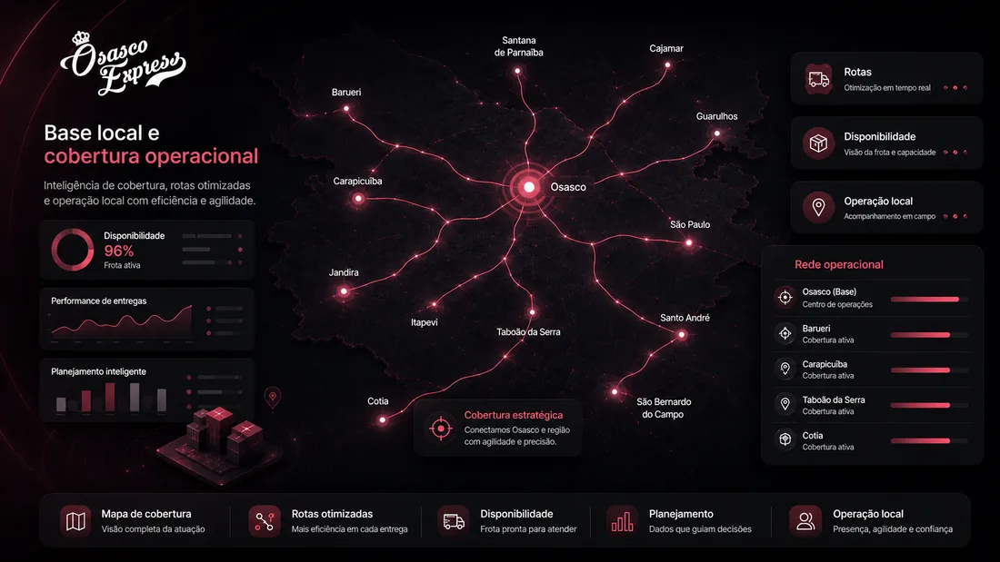

Pedidos próprios
Apoio para entregas que nascem nos canais diretos da empresa.
Serviços de entrega para empresas
A Osasco Express apoia empresas que precisam organizar entregas com análise, disponibilidade de parceiros autônomos, suporte humano, agenda digital e acompanhamento operacional.

Delivery Próprio Assistido
Pedidos pelo WhatsApp, telefone, balcão, site, cardápio digital e plataformas exigem método. O problema não é só ter entregador: é ter fluxo, comunicação, cobertura e clareza.
Apoio para entregas que nascem nos canais diretos da empresa.
Operação pode considerar iFood, 99Food, Keeta e outros canais, conforme análise.
Organização da comunicação entre loja, suporte e parceiro autônomo.
Apoio para entender horários, volume e necessidade real de cobertura.
Como começamos
Mapeamos segmento, canais de venda, horários, volume e região.
Indicamos se faz sentido delivery assistido, rota local, última milha ou outro formato.
Alinhamos canais, grupos, ponto de coleta, regras e fluxo operacional.
A operação é acompanhada conforme o modelo combinado e viabilidade.
Outros modelos
Apoio para volumes e rotas locais em Osasco e região.
Operações com repetição, horário e necessidade de previsibilidade.
Demandas locais, documentos, itens leves e entregas comerciais.
Quando a entrega exige mais cuidado, alinhamento e comunicação.
Por que começar pelo delivery próprio
Quando o canal próprio cresce sem organização, a equipe perde tempo resolvendo falta, atraso, despacho e comunicação. O diagnóstico mostra qual modelo pode funcionar antes de contratar.